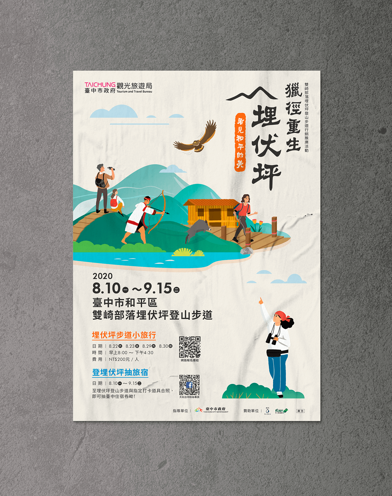
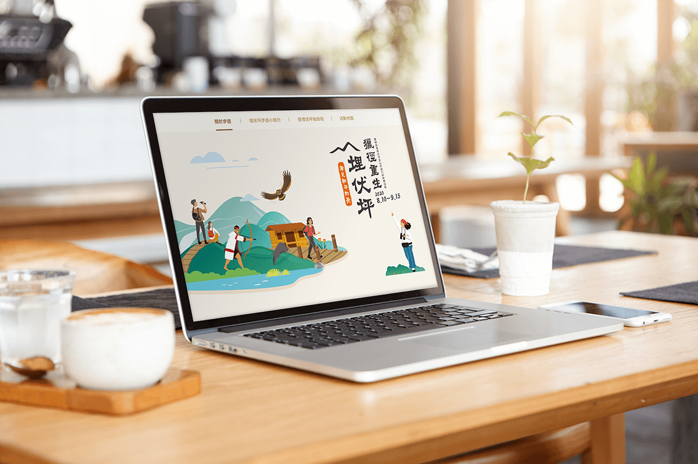

獵徑重生埋伏坪｜看見和平的美
位於臺中市和平區的雙崎部落緊臨雪山山脈及大安溪，地理位置特殊，擁有豐富的生態與宜人的氣候，過去也因為這獨特的地形，而成為泰雅族北勢群族人巡山護水之獵徑，亦是阻隔日軍進攻，保衛家園的重要地理位置，而埋伏坪的名稱也是由此而來。
主視覺設計理念
主視覺從過去的文化歷史故事的樣貌，延伸至現今成為民爭走訪的歷史山巒美景，希望藉由從過去到現在的畫面連結，加深大家對於埋伏坪所乘載的歷史文化意義。

